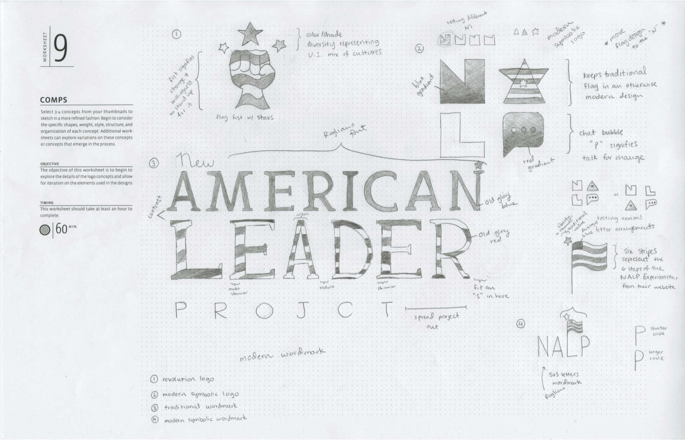

A logo emphasizing bipartisanship, modernism, and traditional values for the New American Leaders Project.
Researcher
Graphic Designer
September 2017 to October 2017
As part of my Introduction to Communication Design course, students were assigned to create a logo for the New American Leaders Project. The objective was to help the organization reach a wider audience of minority participants in the program, businesses for sponsorship and funding, and a national population of voters and supporters.
The most immediate action in this project was to study opinions of the audience from opposite ends of the political spectrum. I chose two students at the University of North Texas with two completely different backgrounds.
After my interviews, both candidates’ answers had nearly zero similarities. Thus, I decided that the logo should be as neutral as possible while still representing the values of the organization.
After my interviews, I needed to contextualize the space in which the logo would reside. That meant completing a competitive audit where I mapped out various organizations that would be competing with NALP for their prime audience, including other nonprofits, political entities, and minority programs.
Bubble maps, word lists, visual matrices, and thumbnailing all helped me to combine ideas and generate a variety of images that I could use to narrow my thought process. These ideation tools also helped me think of pictures I hadn’t originally composed by pushing me past my area of sufficiency.
Creating a logo that would be seen by millions, possibly altered, or used as a symbol taught me that glyphs were more than just a language. I tried out three fonts, focusing on modern, serif fonts that provided a combination of traditional and futuristic vibes. Eventually, I settled on a slab-serif that combined both traditional values with a touched-up modern look.
Drawing was not a strength of mine, but using this opportunity to practice, I learned how much it helps to visualize certain concepts and stimulate ideas for a high-fidelity prototype or final product.
While drawing out the tiniest details of each picked-out logo, I realized that some were too modern and unrecognizable as a political organization. Other logos seemed to controversial, previously symbolizing (good and bad) movements. Scrutinizing each logo also gave me a feel for which ones would blend in with the current climate and be too comfortable for attracting new members to the organization.
I eventually chose two logos to test at various scales. Deciding that each had its pros and cons at different sizings, I combined both into a cohesive logo for my final submission.
Through a variety of worksheets, I adopted a creative process that helped me to organize my project rather than jumping into computer-generated design. The NALP logo was a culmination of research, textual and visual ideation, font and color exploration, and a refined final product. I learned how to make my designs unique without sacrificing the client’s objectives.